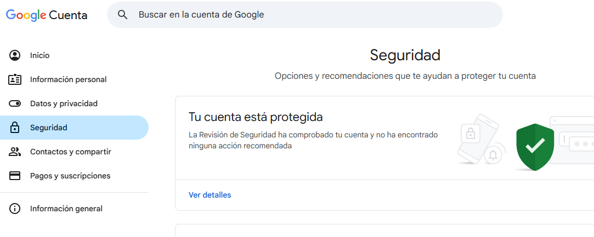
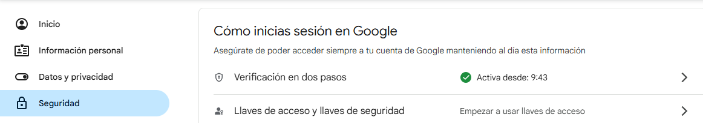
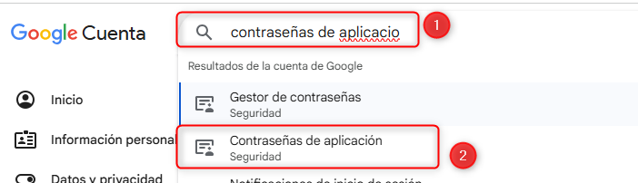
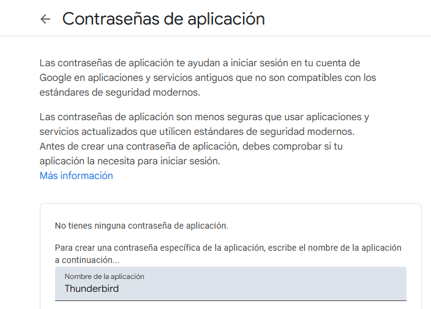
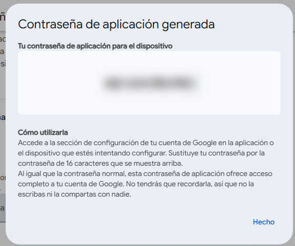
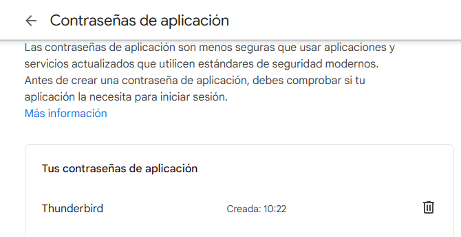
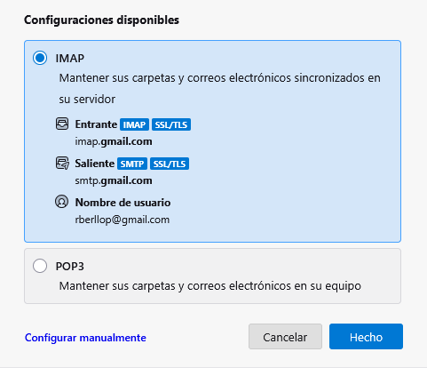
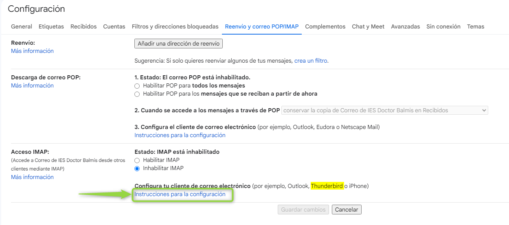

En la unidad anterior ya vimos la diferencia entre aplicaciones de escritorio y aplicaciones web. Las aplicaciones de escritorio son programas que se instalan en el ordenador del usuario y que se ejecutan en él. Las aplicaciones web, en cambio, son programas que se ejecutan en un servidor web y que se acceden a través de un navegador web.
Inicialmente los programas que permitían utilizar correo electrónico se tenían que instalar localmente en cada máquina de los diferentes usuarios. Es el caso de los programas Microsoft Outlook o Mozilla ThunderBird. Estas aplicaciones necesitan una instalación y una configuración especial para bajar el correo electrónico desde el servidor de correo al ordenador local. Esta es la gran diferencia entre el correo electrónico tradicional y el correo web.
Info
Se conoce por correo web los servicios de correo electrónico que tienen como plataforma principal un espacio web.
Además del inherente beneficio de poder consultar el correo en cualquier lugar donde tengamos una conexión a Internet y un dispositivo con un navegador, los servicios actuales de correo web suelen tener las siguientes características:
Los servicios de correo web más conocidos son Gmail, de Google, y Outlook, de Microsoft.
Por último, es importante destacar que la integración con los dispositivos móviles marcó una importante innovación ya que las aplicaciones específicas que se lanzaron para teléfonos inteligentes (smartphones) y tabletas (tablets) se convirtieron en una importante extensión del correo electrónico en su versión para escritorio.
Los clientes de correo electrónico
El uso masivo de Internet y la tendencia general a utilizar, cada vez más, aplicaciones web, hace que los servicios de correo electrónico web se hayan convertido en una herramienta de uso diario.
El envío de correos electrónicos se da gracias a los servidores de correo electrónico que permiten el intercambio ya sea entre usuarios, servidores, clientes y servidores. Este tipo de servidor almacena y reenvía los mensajes mediante los protocolos SMPT, POP e IMAP.
El protocolo SMTP (Simple Mail Transfer Protocol) es el protocolo que se utiliza para que dos servidores de correo intercambien mensajes.
El protocolo POP (Post Office Protocol) se utiliza para obtener los mensajes guardados en el servidor y pasarlos al usuario. Por otro lado, aunque el protocolo IMAP es similar al POP, el funcionamiento y las funcionalidades que ofrece son diferentes. Cuando se utiliza un servidor de correo IMAP, los mensajes de correo electrónico se mantienen en el servidor donde los usuarios pueden leerlos y borrarlos.
A diferencia de los clientes web de correo electrónico que permiten enviar y recibir mensajes mediante una página web, los clientes de correo son programas que se instalan en nuestro ordenador y que nos permiten gestionar el correo y los contactos, además de la agenda.
Por otro lado, si bien con el correo electrónico web los correos quedan almacenados en el proveedor web del correo electrónico, en el caso del cliente de correo electrónico tradicional, este busca los mensajes que llegan al servidor de nuestro proveedor de Internet y los descarga cuando se lo pedimos. La conexión con el servidor por parte del cliente de correo electrónico se puede realizar mediante dos protocolos diferentes, el POP3 o el IMAP.
En el caso del protocolo IMAP, los mensajes quedan almacenados en el servidor y pueden ser consultados también desde otros ordenadores o programas de correo, incluido webmail. En el protocolo POP3 (Post Office Protocol versión 3), los mensajes que se reciben en el servidor de correo electrónico son descargados en el ordenador donde está instalado el cliente de correo electrónico y borrados del servidor.
Hay clientes de correo gratuito y de pago. El más utilizado dentro de los de pago es Outlook de Microsoft, que se puede instalar mediante la suite de Microsoft Office. En el ámbito de software libre, uno de los más conocidos es Mozilla Thunderbird, que funciona tanto en Windows, como en Linux y en Mac.
Mozilla Thunderbird es un cliente de correo gratuito de ejecución rápida y multiplataforma que consume menos recursos que otros, basado en el código desarrollado dentro del proyecto Mozilla.
Antes de configurar el cliente de correo electrónico Thunderbird, tendremos que definir sus parámetros principales (la cuenta de correo electrónico que vincularemos y con qué protocolos, POP3 o IMAP).
Según con que email queramos configurar en nuestro cliente de correo Thunderbird, antes de arrancar la configuración del Thunderbird, tendremos que definir estos parámetros en la cuenta con la que trabajaremos.
Por ejemplo, si es de Gmail, para hacerlo, tendremos que acceder a la cuenta de correo electrónico de Gmail y dirigirnos a la opción Configuración.

Activamos la Verificación en dos pasos (2FA).

En la misma sección de Seguridad, buscamos Contraseñas de aplicaciones.

Generamos una contraseña.

Y pulsamos Crear. Nos aparece una ventana nueva y debemos copiar y pegar esta contraseña en un lugar seguro.
No vamos a poder volver a verla, por lo que copiarla antes de pulsar Hecho.


En caso de perder la contraseña, podemos eliminarla y crear una nueva.
⚠️ Esta contraseña es solo para Thunderbird.
No se comparte con nadie.
Una vez hayamos definido los parámetros esenciales de la cuenta de correo electrónico de Gmail para que trabaje con una aplicación externa como es Thunderbird, ya podremos instalar y configurar el cliente de correo electrónico Thunderbird en nuestro ordenador.
Para descargarlo lo haremos desde la página de Thunderbird.
Una vez descargado y habiendo ejecutado su instalación, se abrirá la ventana principal para utilizarlo.
Una vez Thunderbird ya esté instalado, me pedirá una cuenta de correo electrónico y una contraseña para configurarlo. Usaremos la cuenta de correo electrónico de Gmail que hemos configurado en la parte 1.

Se nos abrirá una ventana donde podremos definir la cuenta de correo electrónico que queremos vincular con nuestro cliente de correo electrónico y, a la vez, con qué protocolo de correo trabajaremos. En este caso, introduciremos el correo electrónico y la contraseña y IMAP como protocolo. Además, tendremos que definir, si no nos aparece, las direcciones web del servidor de correo electrónico desde donde descargaremos los correos al software Thunderbird y el servidor al que se conectará el cliente de correo para enviar los correos electrónicos (SMTP).
Una vez Thunderbird haya certificado la correcta conectividad con el servidor de correo electrónico tanto para recibir correos electrónicos como para enviarlos, el correo electrónico aparecerá configurado dentro del cliente de correo y ya podremos comprobar el correcto funcionamiento del correo que acabamos de configurar en Thunderbird accediendo a él y enviando un correo electrónico de prueba.
Si hemos configurado correctamente el cliente de correo electrónico, el correo se habrá enviado correctamente y también se podrán recibir. Además, podremos comprobar que los correos que se envían desde el cliente de correo electrónico Thunderbird se guardan en la bandeja de salida del correo electrónico web.
Documentación técnica
A la hora de configurar un servicio, ya sea en Google como en otro proveedor, es recomendable consultar y, en la mayoría de los casos, seguir la documentación técnica donde quedan contempladas todas las posibles consultas que pueden surgir durante un proceso de instalación o configuración.
Si tomamos como ejemplo la instalación y configuración de un cliente de correo electrónico a partir de una cuenta de correo electrónico web de Google, Gmail, nos encontramos que Google proporciona información bastante detallada contemplando todas las opciones a las que podemos tener que hacer frente. Por ejemplo, si nos dirigimos al apartado Configuración del correo electrónico web de Google y, a continuación, a la pestaña Reenvío y POP/IMAP donde podremos configurar el protocolo para la recepción de correos electrónicos por parte del cliente de correo electrónico.
Una vez dentro del apartado podremos acceder a un enlace que, bajo el nombre de Instrucciones de configuración, podremos acceder a la documentación técnica de Google en relación con la configuración de un cliente de correo electrónico.

La documentación técnica busca dejar cubiertas todas las posibles cuestiones que pueden surgir a lo largo de un proceso de configuración y, a la vez, proporcionar el mayor abanico de pautas e información con el lenguaje más sencillo y comprensible posible.
Calendarios en línea
Los calendarios en línea son aplicaciones web que se utilizan para gestionar agendas de actividades. Es decir, son programas que permiten almacenar y organizar información sobre citas, reuniones y eventos en un entorno web.
La principal ventaja de los calendarios en línea respecto a las tradicionales agendas en papel es que estos permiten compartir la información con otros usuarios y, la mayoría, tienen funciones para notificar los eventos de una manera automática, ya sea por correo electrónico o con un mensaje al dispositivo móvil.
Los calendarios en línea también reciben el nombre de calendarios web. El más conocido en la actualidad es Google Calendar, que forma parte del conjunto de aplicaciones web ofrecidas gratuitamente por Google.
Características del Google Calendar
Google Calendar es una aplicación web de Google consistente en un gestor de contactos y de tiempo que, entre otros servicios, nos ofrece la posibilidad de crear calendarios y compartirlos con aquellos usuarios que deseamos mediante su dirección de correo electrónico.
Google Calendar también dispone de una aplicación para dispositivos móviles con la cual recibir notificaciones de eventos y/o crear de nuevos. Estos quedarán sincronizados automáticamente con el resto de usuarios y dispositivos que tengan acceso al calendario.
Cabe decir que también hay la posibilidad de sincronizar el Calendar con otras aplicaciones de escritorio, como por ejemplo el cliente de correo electrónico Microsoft Outlook.
Por último, también hay la posibilidad de acceder fuera de línea, pudiendo trabajar con una versión de los calendarios no conectada a Internet que se sincroniza cuando vuelve a estar en línea. Esta función es útil cuando se prevé que necesitaremos trabajar sin conexión, por ejemplo durante un viaje en avión de larga duración.
Para acceder al Google Calendar lo podemos hacer tanto mediante la cuenta de correo electrónico de Google como mediante su página web de inicio http://calendar.google.com y acceder con el usuario de Google y la contraseña, o bien acceder directamente desde la bandeja de correo electrónico, clicando en el icono de la aplicación web Calendar.
Cada usuario que inicia sesión al Google Calendar tiene asociado, por defecto, un calendario con el nombre del identificador de su cuenta.
Además de este calendario por defecto, el usuario puede crear tantos calendarios como desee, pudiendo compartirlos con otros usuarios y establecer permisos de lectura y escritura. Para crear un nuevo calendario, el usuario tendrá que clicar sobre la opción Crear nuevo calendario.
Aspectos importantes